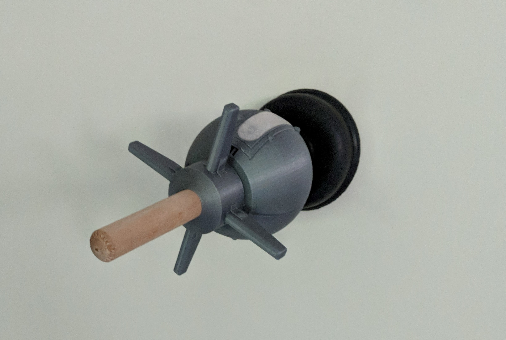
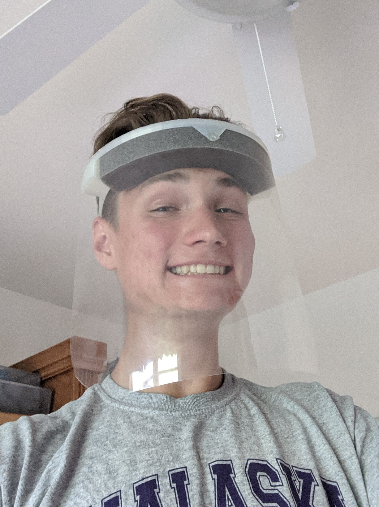
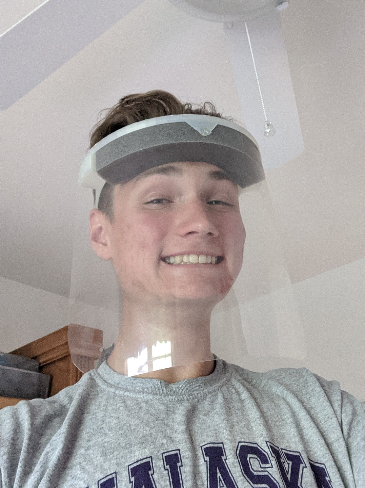
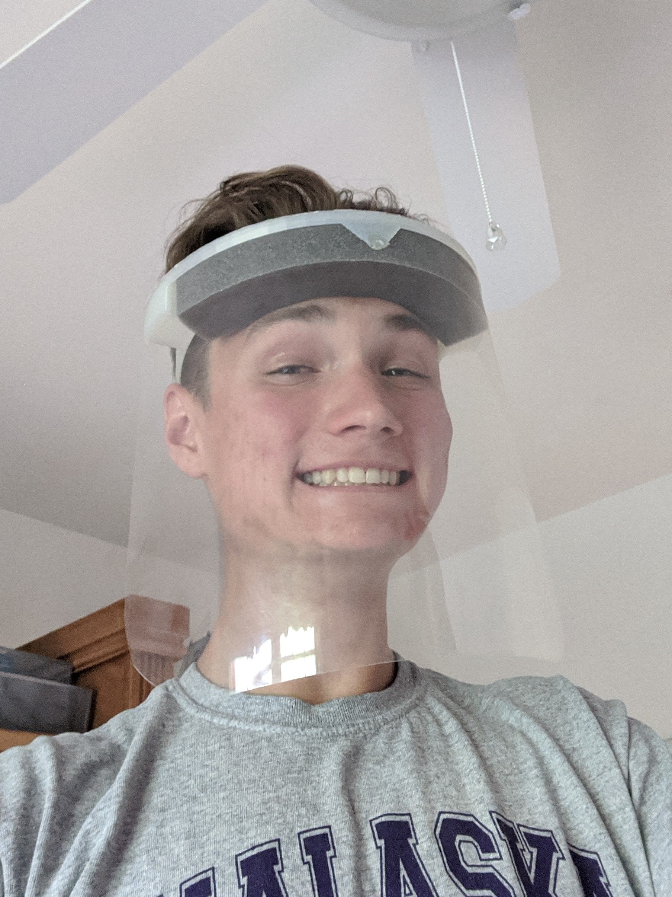

Pre-highschool, when I was first getting into 3D printing, I had the idea to design my own lightsaber hilt
because it seemed like a complex piece that would familiarize me with the tools of 3D modeling in my quest to
understand it more. I modeled a variety of designs that were foundational to skills I use on other projects now.
I soon realized that this was also an excellent opporotunity to get into learning basic electronics; however, I
would soon find that self-teaching and understanding the physics of electronics was a highly difficult task that
I was, in my younger days, ill equipped to handle. I sidelined the project and got caught up in other things,
eventually forgeting about it entirely.
Fast forward to my first semester of college, when I stumbled back upon the designs I made long ago. I recalled
the goal I had and recognized that I had to see it to completion. The task was almost trivial at this point, but
I had to re-educate the Arduino syntax and modify the hilt to incorporate sourced parts. Over winter break, I
modified the design and used clear polycarbonate tubing for the blade. I used an Arduino Pro Mini to control the
LED strip I got online and soon assembled a functional piece.
The final product is by no means well built and has some significant flaws, but its completion satisfied my
inner desire to see a past, discarded project to the end. It's still really cool and I swing it around in the
dark sometimes just because I feel like it. I'm glad I revisited the project and have some closure.
Improvements in Future Development
Improved wire management: I failed to consider the true amount of volume that many wires would consume
inside the hilt. I feel that putting more consideration into proper wire management is the necessary next step
in creating a product that is easier to open up and repair.
Easier access to internal components: The design I settled upon uses hilt parts that screw together.
This twists the wires and calls for many connections between the divided parts. A design that employs an
access hatch of sorts would make the product easier to maintain and modify.
Supreme Garage Door Opener
Completed April 2018
Project Overview
This project was done for a friend of mine whose garage door opener housing broke. He had initially contacted
the garage door opener company to get it fixed but was advised to just buy a new one. To him, this seemed like a
waste of perfectly functional electronics, so he asked me, knowing that I had a 3D printer and proficient 3D
modeling skills, to design and manufacture a new case. I made a base design that met basic functionality
standards; however, this lacked uniqueness and the utilization of rapid custom prototyping that 3D printing
opens the door to. I asked if he wanted any unique elements to be added, and after some thought he settled on
a Supreme branded garage door opener. I added the logo to the design and went the extra mile to paint it bright
red in the standard Supreme fashion. Overall, this was an excellent little project to practice meeting the
design contraints imparted not only by the manufacturer of the initial garage door opener but also by the
intended client.
Earbud Tip Case
Completed January 2019
Project Overview
This project was inspired by the need for a case for an assortment of earbud tips. I had 4 unique pairs, so I
came up with a rotating design that leaves the slot of the tips in active use open while containing the other
tips. Magnets were mounted discretely to prevent undesired rotation and the exposure of closed slots.
Improvements in Future Development
Different shaped magnets: I used small, round rare-earth magnets that I already had going unused. These
were not an optimal choice; the polarity alignment and mounting of the magnets was much harder than that of a
disk shape would have been.
Addition of compartment through holes: There was noticable difficulty in removing the light-weight tips
from the case due to vacuum pressure. Through holes would facilitate the removal of tips, and create a better
functioning product.
Tape Ball and Captain Band Display
Completed November 2018
Project Overview
Over the course of 4 years of high school varsity soccer, a tradition emerged and was sustained: I wrapped my
boot tape into an ever-accumulating ball. At the end of my high school career, the ball of tape was over 5
inches in diameter. This object serves as a reminder of my growth as a player and the idea that we build on the
efforts of our past. Such an object deserves to be displayed in a way that reflects its personal importance.
The first iteration of the design was simply a stand for the ball. It accomplished exactly what I had intended
it to do: provide an elagant display that puts the object at the center of attention. However, I felt that I
could incorporate my captain band into the design, as it too held great personal meaning, representing the
responsibility of leadership. As a result, I modified the design, showcasing the band and the tape ball in a
minimal, elegant manner.
Tucked underneath the band is the list of my teammates that I had shared experiences
with over the course of four years that I had written up prior to my last game. They all influenced me and
deserve to be kept in mind for such contributions to my character. This piece is one of my designs of the
greatest personal value, and I hope you understand and appreciate the importance of a well designed and thought
out display.
Improvements in Future Development
Use of less material: The part was made hollow to conserve material. Despite this effort for
conservation, I wanted the part to still feel robust, so I had decently thick walls. The walls ended up being
almost too thick, so design iterations would take this into consideration and reduce plastic use. Future
development will not occur, as replacing a functional part is contrary to the point of reducing material
consumption.
Fortnite Clinger Prop
Completed July 2018

Project Overview
I was inspired to do this project by a slow night of minimum-wage labor in which I threw a small drain plunger
at the wall and it proceeded to stick, much akin to the mechanics of the "Clinger Grenade" in the game Fortnite.
I ordered a drain plunger and proceeded to design parts that seemlessly integrated with the ordered part. This
was done via two halves that encased the plunger handle and a top that screwed them together, simultaneously
tightening the two halves. The parts were designed and printed with the intention of product expansion, but
given that it was a fun project without much purpose or knowledge to gain, further development was not pursued.
Improvements in Future Development
Addition of Electronics: The intended product expansion was envisioned in the addition of electronics
to make the prop functionally more similar to the in-game mechanics.
Arc Reactor Halloween Costume
Completed October 2019
Project Overview
With the Halloween celebrations of my freshman year approaching, I was in desparate need of a simple yet
captivating Halloween costume. I have always been a fan of the Marvel movies, so I settled on creating an Arc
Reactor prop. It was a simple costume idea that was as comfortable as is was attention getting.
I modeled the parts and 3D printed them on my home machine. I calculated the resistor value to use for a
parallel circuit with three blue LEDs to maximize their brightness. Given that this was a fast turnaround
project, I ended up taping the electronics into the back fittings that I had designed. The LEDs were bright
enough to be seen through a shirt, even after being diffused to create the classic Arc Reactor glow. Further
development may result in a more quality piece that can be used as a simple costume for Halloween seasons to
come.
Improvements in Future Development
Improved battery holder: While taping the electronics into the parts was temporarily effective and
served sufficent purpose, the lights would occasionaly flicker due to contact issues with the conductive
leads. If I were to recreate the piece, I would add an actual battery mount to better secure the button cell.
Rear Cover: In an effort to maintain a slim piece, I decided that a rear cover was an unnecessary
feature. Use and inspection of the product found that a rear cover would most likely allow for increased
comfort and product durability at the expense of minimal thickness.
Monitor Mount Offset
Completed April 2020
Project Overview
This is a small part I made to fix an interfacing issue present in a monitor and arm I ordered. While both the
mount and the bracket of the arm met the VESA mount specifications, ASUS inset their end for seamless
integration with the provided stand. This would have been fine had the mount I orded not been slightly wider
than the recession. It was such a small difference that I contemplated sanding down the bracket to make it fit,
but this would violate the warranty. Should something go wrong with the stand, I would be unable to replace it.
For this reason, I made an intermediate offset part and sourced M3 screws of a longer length. I made the offset
part have some surface area for contact while keeping it a quick part to print(I wanted my monitor ASAP). I
could have gone overboard on the design, but it would be foolish not to keep it simple.
With the power of 3D printing and quick design skills, I was able to have a corrected interface and functional
product pair a mere 3 hours after opening the individual, flawed products.
Mom's PPE
Completed June 2020

Project Overview
My mom is a healthcare worker, and the PPE she was given by her employer was clearly cheap and poorly put
together. Knowing about my skills and past projects, she asked me to design and fabricate a new, more
comfortable PPE.
I made a preliminary design and roughly approximated the shape and size of my mom's head. My first print failed
due to printer issues, but it gave excellent insight into the flawed aspects of my approximations. The parts
from the existing PPE were easy to measure accurately, so they fit into the part fine. I made some key design
changes and produced another part.
The new part, by some extraordinary luck, worked exceptionally well. I insisted on making improvements to the
design to fine tune its comfort and eliminate useless feature implementations, but my mom insisted that it was
sufficiently comfortable and a huge improvement over her previous PPE. To date it has worked very well and I
have no intent of creating an improved version unless the current one has compromised functionality.
Improvements in Future Development
Removal of overthought flex design: I implementented a compliant mechanism feature that I thought would
allow for the bands to be more flexible and adjust to approximation errors, but the mechanism did not function
as intended and should be removed or replaced. The plastic is sufficiently flexible to accomplish this
purpose, so I think it would be sufficent to eliminate the feature.
Thicken the thin points: There are sections of the design by the temple that I could see being a
potential point of part failure.
Make slight headband adjustments: The forward part of the head contacts could be brought in slightly to
better accommodate skull contours.
Replacement Shovel Handle
Completed March 2019
Project Overview
The winter of 2019 was a tough time for my family, beginning with the sudden loss of both grandparents on my
mom's side of the family. There is a shovel my family has that is from my mom's childhood. It holds great
sentimental value to her which she has outwardly expressed on multiple occasions. In the late months of
winter, my brother broke the plastic handle of the shovel. My mom was clearly devestated and set it by the
garbage to be taken away. However, it quickly occured to me that my experience in 3D modeling and the ability
to rapidly prototype with my 3D printer presented me with the opporotunity to try to make things better.
I collected the fragments of the broken handle and modeled the most identical handle I could, interfacing the
part with the end of the remaining shovel. I sent the file to the printer, and within two days of the shovel
breaking, it was fixed.
I will never forget my mom's reaction when I showed her the new handle, and I will never forget the
emotions that overcame me as I hugged her and she began to cry. It was an unexplainable feeling in which I base
much my passion for engineering. This project was small, short, and easy, but somehow it holds more value to me
than anything else I have done. Fixing beyond that which is physical is something I seek to achieve as I
progress deeper into my education and career.


 
